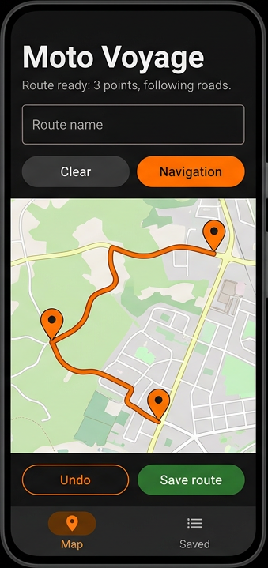

Map — sketch the ride, refine the line
Drop points on the map and Moto Voyage snaps a sensible road route between them using open routing data. Name the route, undo mistakes, or clear and start over without losing your flow.
- Tap to add waypoints — the route updates as you build your loop or one-way trip.
- Clear & Navigation — reset the canvas or hand off the full path to Google Maps when you are ready to ride.
- Undo & Save route — step back one point at a time, then persist the finished line under a name you choose.
- Map / Saved tabs — stay in planning mode or jump to your library without digging through menus.
